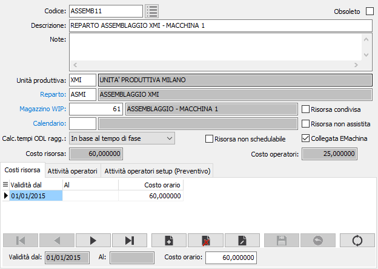
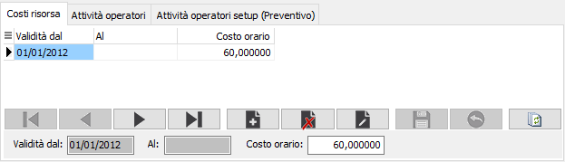
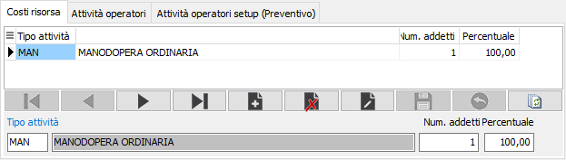
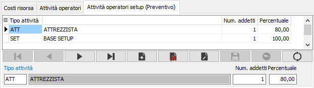
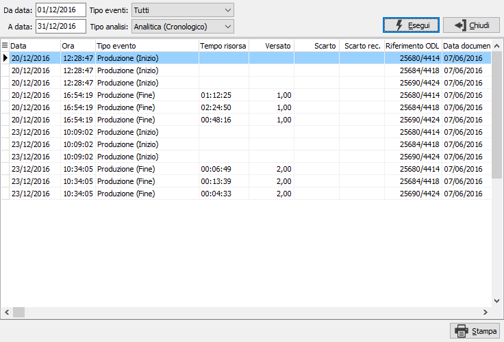

Risorse
Le risorse (macchine) sono utilizzate sia nella definizione del costo preventivo di un prodotto (per le fasi interne deve essere associata una risorsa preferenziale alle fase) sia nella pianificazione relativamente ai singoli ODL (dove è possibile modificare la risorsa da utilizzare) sia nella fase di versamento (dove viene assegnata la risorsa effettivamente utilizzata per la produzione della fase).
E' obbligatorio specificare sulla risorsa l'unità produttiva di appartenenza; il dato è modificabile fino a quando la risorsa non viene utilizzata sugli ODL.

Le risorse vengono raggruppate attraverso la tabella Gruppi fasi e per ciascuna risorsa è possibile definire un magazzino WIP specifico; il calendario per risorsa al momento non è utilizzato. La casella Risorsa non assistita indica una macchina che non ha bisogno dell'operatore per essere in funzione e la casella Risorsa condivisa indica che la risorsa può essere utilizzata da più operatori su ODL differenti; entrambi i parametri vengono gestiti all'interno dell'applicazione OS1BMJob. Il campo “Calcolo tempi ODL raggruppati” consente di determinare, in fase di consolidamento eventi, i tempi di lavorazione e quindi i tempi (e di conseguenza i costi) di ogni singolo ODL raggruppato; è possibile gestire la ripartizione in base alla quantità versata, al tempo di fase oppure in base al numero di ODL che compongono il raggruppamento.
Se presente il modulo di schedulazione è presente anche la casella "Risorsa non schedulabile"; se spuntata la risorsa non sarà visualizzata fra le risorse disponibili nel Gantt Risorse; il campo è disabilitato se per la risorsa sono presenti attività schedulate e non evase.
Se attivo il collegamento con EMachina e la risorsa è collegata ad una macchina è necessario spuntare la casella "Collegata EMachina".
 |
 |
 |
|
I costi legati alla risorsa sono costituiti dal costo della risorsa stessa e dal costo orario operatori, entrambi potranno essere modificati nel ciclo di produzione.
Il costo orario risorsa da applicare è definito in base ad un periodo di validità; se la data di fine validità viene lasciata vuota il costo sarà valido sempre a partire dalla data di decorrenza fino a quando non sarà inserito un costo in una data successiva, alla decorrenza, allora il periodo precedente sarà chiuso automaticamente al giorno prima dell'inizio validità del nuovo costo. Il costo operatori viene determinato in base alle Tipologie di attività associate alla risorsa e per ognuna al numero di addetti e alla percentuale di utilizzo degli operatori stessi.
Le attività operatori setup sono analoghe alle attività operatori, ma vengono utilizzati solo dalla manutenzione cicli di produzione per calcolare il costo dell’attività di setup. Per queste attività di setup non è attiva la gestione delle fasce orarie.
Il pulsante Analisi eventi consente di interrogare gli eventi che derivano dall'applicazione OS1BMJob; la consultazione è simile all'analisi eventi.
